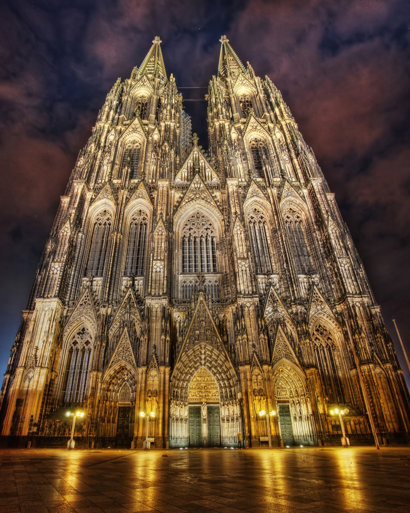
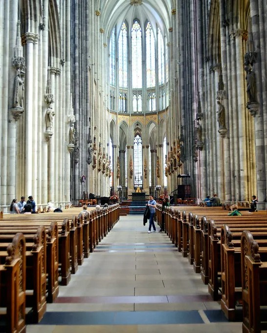

The Valentin Karlstadt Musäum is a museum in Munich dedicated to the lives and legacies of the German comedies Karl Valentin and Liesl Karlstadt. It houses artifacts from their careers as well as other amusing exhibits. This tour takes you through the levels of the museum and the exhibits within them.
Germany
Welcome to the Germany cultural tour. Here you will find immersive experiences of globally iconic landmarks as well as local culture.
3D Tour: Valentin Karlstadt Musäum
Photo Gallery: Cologne Cathedral


The Cologne Cathedral is a famous Catholic cathedral in the city of Cologne. It is a UNESCO World Heritage Site, and it houses the relics of the three wise men. It was constructed in the Gothic architecture style, and took over 600 years to complete. The twin spires that sit atop the cathedral are it's most dominating, iconic features.
3D Tour: St. Nicholas' Church Museum
St. Nicholas' Church is a Brick Gothic church in Berlin dating back to 1230. It is the oldest church in the city, and it houses a museum that showcases the history of the church and the city. This tour explores the museum portion of the church.
Video: Munich Walking Tour
This video by HP Walking Tours shares a captioned walking tour of the city of Munich, passing through many iconic locations such as the Marienplatz, the Hofbräuhaus, and the English Garden.